VMware vRealize SaltStack Config API
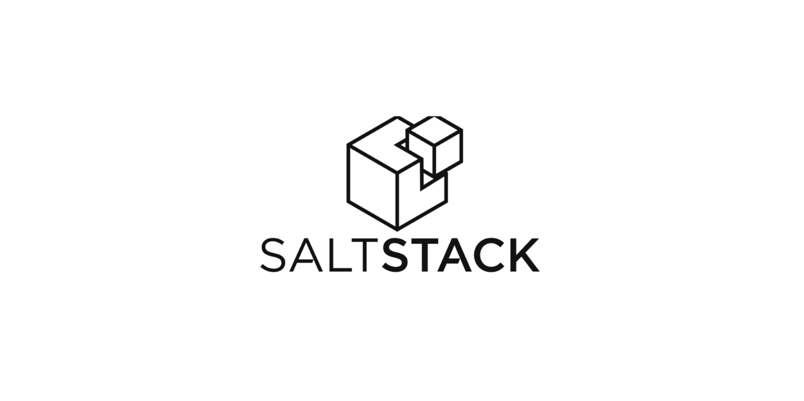
Using SaltStack Config api for Automation from vRA Catalog or cmd
A personal goal of mine for 2022 was to start doing more with Python when working with VMware SaltStack Config. As a Windows Admin most of my automation was done with PowerShell. All the examples you see in the salt documentation are written in Python, so to use Python for some processes makes sense.
I had a use case that made sense to use Python. I want to schedule reboots of AWS EC2 instances using SaltStack Config. For Servers that are on-prem I would always automate the process to create a server reboot scheduled task in vCenter. With AWS I want to use VMware SaltStack Config to schedule the Server Reboot.
Manual Steps:
- Create a SaltStack Config Job to do the reboot.
I create a job named "vRA | Server Reboot". This job will be used for all scheduled server reboots.
- Copy the Python Code below and create a ScheduleServerReboot.py file that will be copied to the SSC server.
The Python Code completes the following steps:
- Creates a Target that uses the grain "id" and will only target the Server that you want to reboot.
- Creates a Run Once Schedule to use the job and new target that was created.
- Sends an email to show that the run once schedule to reboot server was created.
SaltStack Config Server:
Python Code:
# --- Python Code ---
# --- In my code I show the Password. In Production DO NOT DO THIS.
# --- There are so many different ways to include encrypted PWs in the code.
# --- Use what works best in your environment.
# example to run the script
# python3 /scripts/ScheduleServerReboot.py -name '2019DC' -dateTime '2022-06-25T23:00'
import argparse
import pprint
import json
from datetime import datetime
from datetime import timedelta
import random
import smtplib, ssl
from email.mime.text import MIMEText
from email.mime.multipart import MIMEMultipart
# --- Generate a random ID number
randomNumber = random.randint(0,1000)
randomNumber = '0000' + str(randomNumber)
randomNumber = randomNumber[-4:]
print('ID:',randomNumber)
# --- parse arguments
parser = argparse.ArgumentParser(description="Create Targets", formatter_class=argparse.ArgumentDefaultsHelpFormatter)
parser.add_argument("-name", help="Target Name")
parser.add_argument("-dateTime", help="Schedule Date | Time")
args = vars(parser.parse_args())
# --- Set up variables
argName = args["name"]
argDateTime = args["dateTime"]
argDate = argDateTime[0:10]
# --- Print the variables
print('Server Name: ',argName)
print('Date | Time: ',argDateTime)
# --- Connect to SSC Server
host = 'https://192.168.86.110'
user = 'root'
password = 'HackMe!'
from sseapiclient.tornado import SyncClient
client = SyncClient.connect(host, user, password, ssl_validate_cert=False)
# --- Check to make sure minion exists
minionName = ''
minionReturn = client.api.minions.get_minion_presence(minion_id = argName)
#print(targetReturn)
for x in minionReturn.ret['results']:
#print(x)
minionName = x['minion']
print('minionName:', minionName)
if minionName == '':
print('Minion not found!')
minionExists = 'false'
else:
print('Minion found!')
minionExists = 'true'
# --- Create Target ID | Name
targetID = 'id:' + argName
targetName = "vRA | Reboot | " + argName + ' | ' + argDate + ' | ID:' + randomNumber
print('Target ID:',targetID)
print('Target Name:',targetName)
# --- Create New SSC Target
client.api.tgt.save_target_group(tgt={'*': {'tgt_type': 'grain', 'tgt':targetID}}, name=targetName)
# --- Get UUID of new Target Created
targetReturn = client.api.tgt.get_target_group(name=targetName)
for x in targetReturn.ret['results']:
#print(x)
targetUUID = x['uuid']
print('Target UUID:', targetUUID)
# --- Get UUID of Job to run in Schedule
#jobReturn=client.api.job.get_jobs()
jobName = 'vRA | Server Reboot'
print('Job Name: ',jobName)
jobReturn = client.api.job.get_jobs(name=jobName)
for x in jobReturn.ret['results']:
#print(x)
jobUUID = x['uuid']
print('Job UUID:', jobUUID)
# -- Create a run once Schedule
# 2022-06-21T13:21 - Date|Time format from vRA
print('Schedule Time:',argDateTime)
# --- Create Schedule Name
scheduleName = 'vRA | Reboot | ' + argName + ' | ' + argDate + ' | ID:' + randomNumber
print('Schedule Name:', scheduleName)
# --- Create Run Once Schedule
scheduleReturn = client.api.schedule.save(
name=scheduleName,
schedule={'once': argDateTime, 'timezone': 'America/New_York'},
cmd="local",
tgt_uuid=targetUUID,
job_uuid=jobUUID
)
# --- Send Email about vRA Request using gmail.
sender_email = "dale.hassinger@gmail.com"
receiver_email = "dale.hassinger@vcrocs.info"
password = "HackMe!"
message = MIMEMultipart("alternative")
message["Subject"] = "vRA Scheduled EC2 Reboot | " + argName
message["From"] = sender_email
message["To"] = receiver_email
# --- Create HTML Body
if minionExists == 'true':
html = """
<html>
<body>
<div style="font-family: Arial, sans-serif; font-size: 14px;"><b>A Request to reboot a AWS EC2 was run from vRA.</b></div>
<div style="font-family: Arial, sans-serif; font-size: 14px;"></div><br>
<div style="font-family: Arial, sans-serif; font-size: 14px;"><b>EC2 Information:</b></div>
<ul style="list-style-type:disc">
<div style="font-family: Arial, sans-serif; font-size: 12px;"><li><b>EC2 Name: """ + argName + """</b></li></div>
<div style="font-family: Arial, sans-serif; font-size: 12px;"><li>Target Created: """ + targetName + """</li></div>
<div style="font-family: Arial, sans-serif; font-size: 12px;"><li>Schedule Created: """ + scheduleName + """</li></div>
<div style="font-family: Arial, sans-serif; font-size: 12px;"><li>Reboot Date | Time: """ + argDateTime + """</li></div>
</ul>
<div style="font-family: Arial, sans-serif; font-size: 11px;"><b>vCROCS - Automated IT </b></div>
<div style="font-family: Arial, sans-serif; font-size: 10px;">#VMware #vRealize #SaltStackConfig</div>
</body>
</html>
"""
elif minionExists == 'false':
html = """
<html>
<body>
<div style="font-family: Arial, sans-serif; font-size: 14px;"><b>A Request to reboot a AWS EC2 was run from vRA.</b></div>
<div style="font-family: Arial, sans-serif; font-size: 14px;"></div><br>
<div style="font-family: Arial, sans-serif; font-size: 14px;"><b>EC2 Information:</b></div>
<ul style="list-style-type:disc">
<div style="font-family: Arial, sans-serif; font-size: 12px;"><li><b>EC2 Name: """ + argName + """</b></li></div>
</ul>
<div style="font-family: Arial, sans-serif; font-size: 14px;"><b>The Server Name was not found in Salt! Please double check name and try again!</b></div>
<div style="font-family: Arial, sans-serif; font-size: 14px;"></div><br>
<div style="font-family: Arial, sans-serif; font-size: 11px;"><b>vCROCS - Automated IT </b></div>
<div style="font-family: Arial, sans-serif; font-size: 10px;">#VMware #vRealize #SaltStackConfig</div>
</body>
</html>
"""
# --- HTML MIMEText objects
emailHTML = MIMEText(html, "html")
# --- Add the HTML part to MIMEMultipart message
message.attach(emailHTML)
# --- Create secure connection and send HTML email
context = ssl.create_default_context()
with smtplib.SMTP_SSL("smtp.gmail.com", 465, context=context) as server:
server.login(sender_email, password)
server.sendmail(
sender_email, receiver_email, message.as_string()
)Example of email that is sent when process completes.
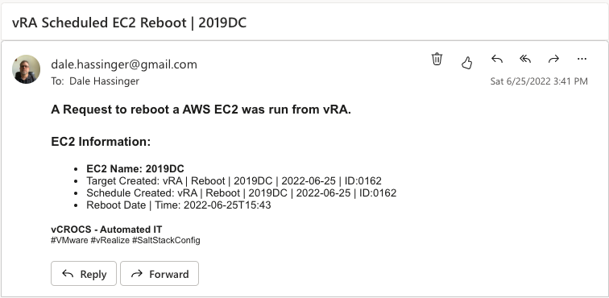
Screen Shots of the SaltStack Config Job, Target and Schedule:
SSC Job:
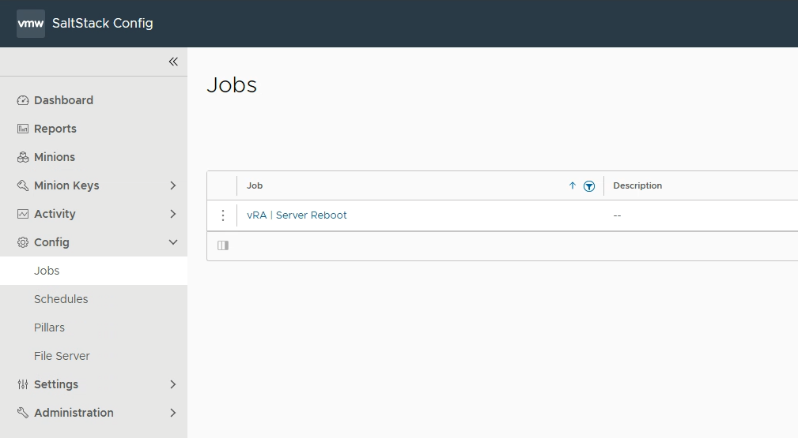
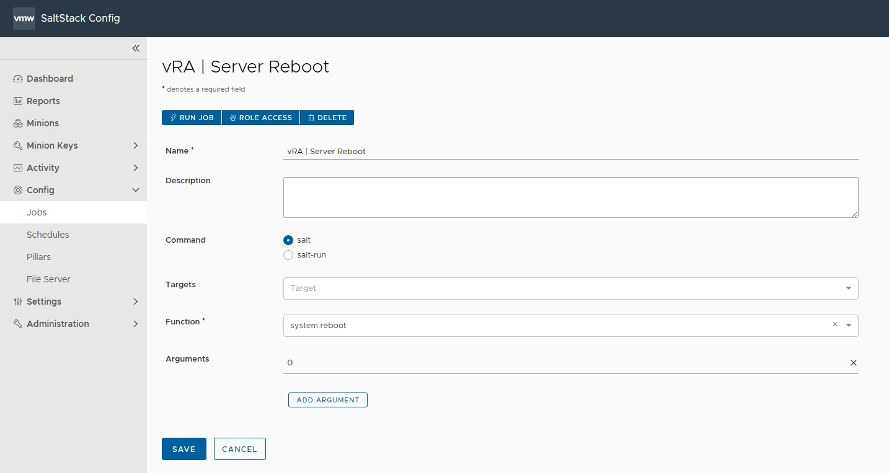
SSC Target:
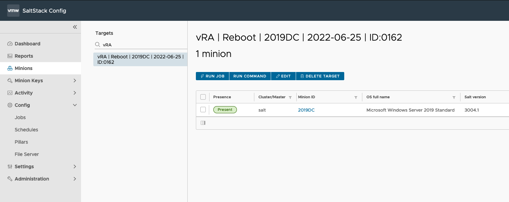
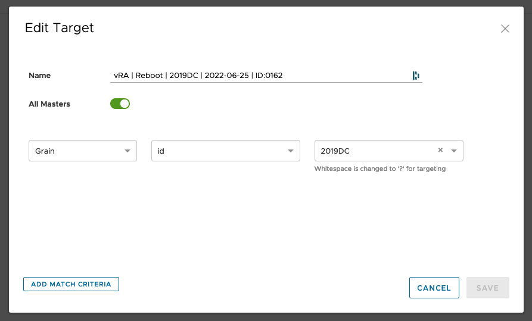
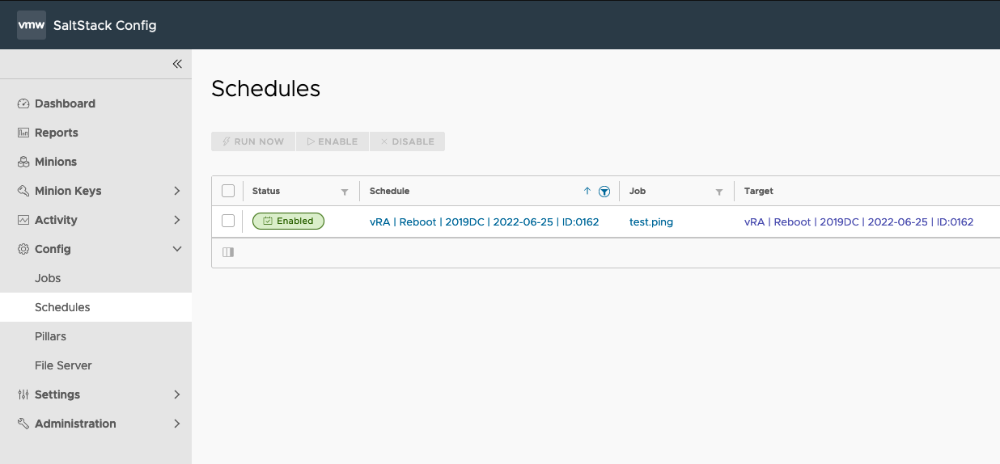
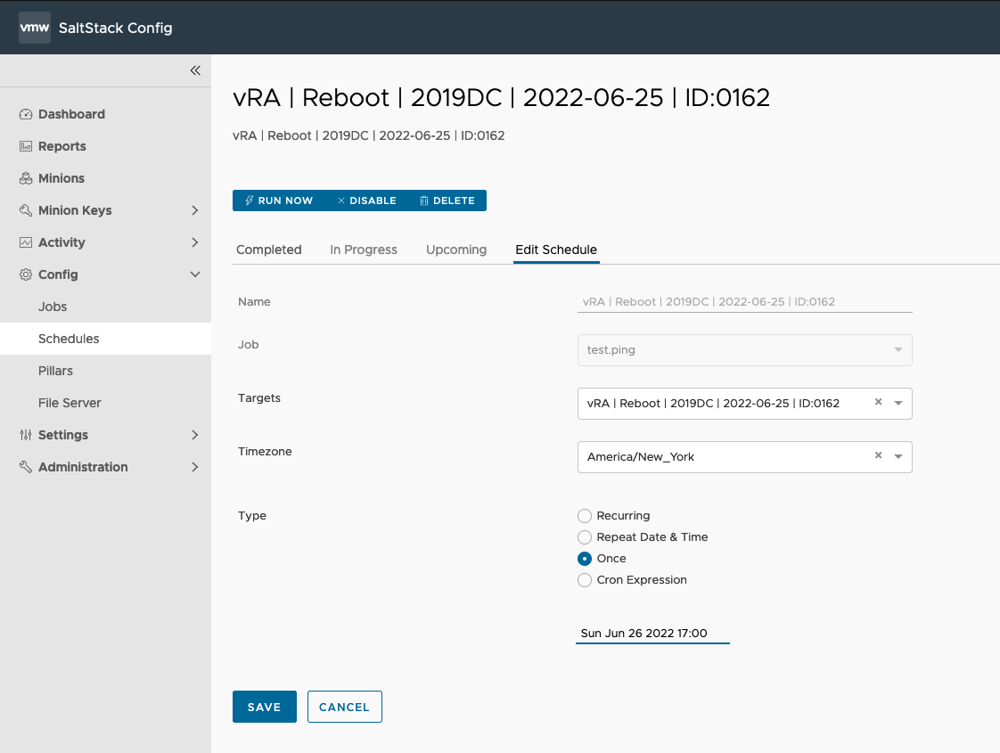
To run this process to reboot an AWS EC2 from the vRA catalog for Day 2 operations I used the OOTB (Out of The Box) orchestrator workflow named "Run SSH command". I never modify the OOTB workflows. I cloned this Workflow and named it "Schedule EC2 Reboot".
Original OOTB Workflow from vRO:
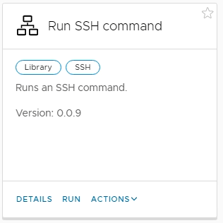
Cloned Worked in vRO:
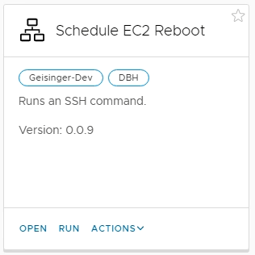
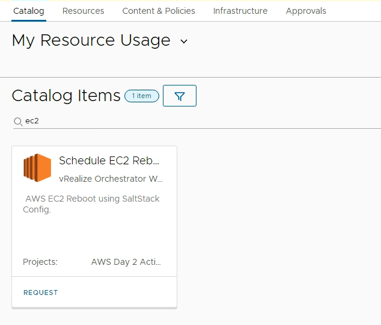
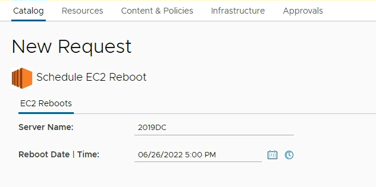
Very simple form to fill out. Enter EC2 name and Date|Time.
The Workflow takes the data from the vRA custom form and does an SSH Connection to the SSC server and runs a single line command using the data from the form as arguments:
python3 /scripts/ScheduleServerReboot.py -name '2019DC' -dateTime 2022-06-25T23:00'
- I hope the provided code and screenshots were helpful to get you started.
Lessons Learned:
- If you are a Windows Server Admin that knows PowerShell, to start using Python will take some time but the languages are similar.
- SaltStack Config api is a great way to create Day 2 automation processes in vRA.
- SaltStack Config - RaaS API Documentation
Salt Links I found to be very helpful:
- SaltStack Cheat Sheet
- SaltStack Tutorials
- SaltStack Documentation
- SaltStack Community Slack Channel
- Learn vRealize Automation
- Learn SaltStack Config
When I write about vRealize Automation ("vRA") I always say there are many ways to accomplish the same task. SaltStack Config is the same way. I am showing what I felt was important to see but every organization/environment will be different. There is no right or wrong way to use Salt. This is a GREAT Tool that is included with your vRealize Suite Advanced/Enterprise license. If you own the vRealize Suite, you own SaltStack Config.